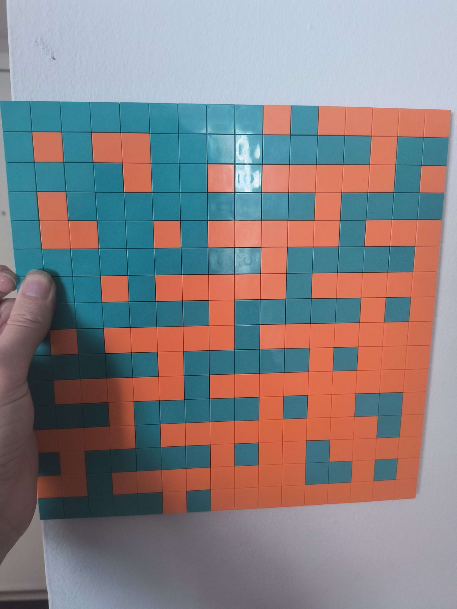

Mosaic Slider (2025)
Drag pixels around the canvas to make pixel art! you can use the color pickers to change the colors. The Save image buttons downloads the pixel art as a PNG image.
About a year ago, I wanted to make art for my wall. I realized that if I used Lego tiles, it would let me make pixel art that's reusable. This puts interesting constraints on the pixel art:
-
The canvas is low resolution, only 16x16 tiles! Here's what that
would look like if these were screen pixels:

- The color palette is limited by what color lego tiles I have on hand.
- I also have a limited number of tiles, so I have to be aware of number of pixels in each color used in the artwork.
Since counting out pixels sounds like a chore, I realized there was an easier way: if I start with the same number of tiles in each color and only rearrange them, that will satisfy the constraints. I don't know of any drawing program with this kind of tool, so I made this sketch.
Here's an example artwork I made with this sketch, and what it looks like in Lego:
